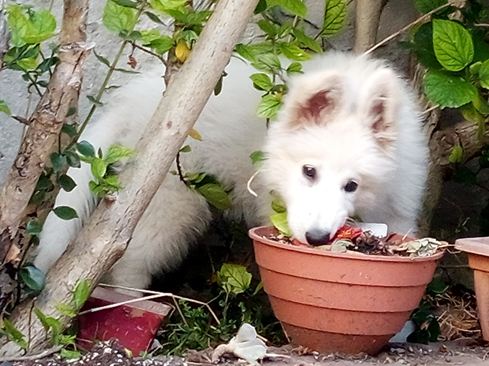

A continuación algunas notas como recordatorio sobre el entrenamiento de Lua:

- Cuando rompe, salta encima, no respeta espacios o tiene conductas que queremos cambiar, primero le indicamos la orden no y si no corrige se utiliza aislamiento (se la encierra cuatro o cinco segundos en un lugar pequeño y oscuro, por ejemplo un baño).
- Practicar orden quieto para los casos de movimiento y permanencia a distancia (esto último implica salir de la habitación y que ella espere) dando premio.
- Previo a salir a pasear, darle la orden sentada en la puerta para que espere. Si intenta salir antes cincharla.
- Al pasear, practicar:
- Si tira mucho hacia un lado dar vuelta, forzandola para ir al lado contrario.
- Mantener la distancia, esto es, cincharla hacia uno cuando tensa la correa.
- Practicar la orden junto utilizando un foco de olor para que camine
junto a nosotros (siempre del mismo lado y sin adelantarse). Este ejercicio
tiene tres variantes:
- Dar la vuelta usando la orden junto, al llegar sentada y dar premio.
- Igual que el anterior, pero subiendo la mano (para que no siga por foco de olor).
- Dar la orden quieta, volver al lugar de donde salimos y luego practicar el llamado utilizando la órden vení, dando premio.
El premio puede ser tanto comida como caricias.